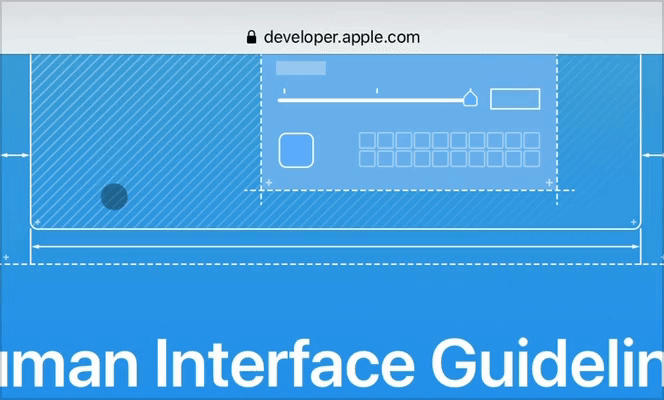
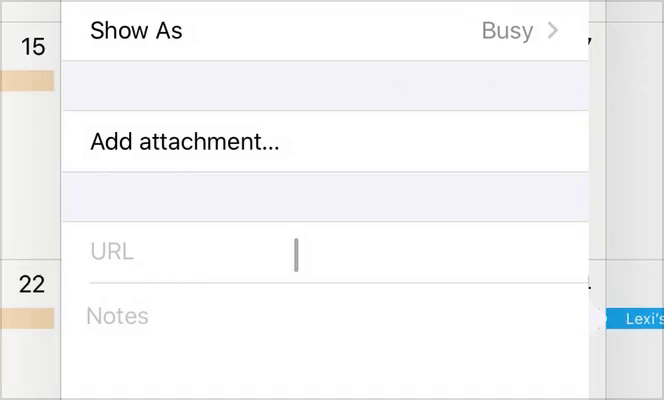
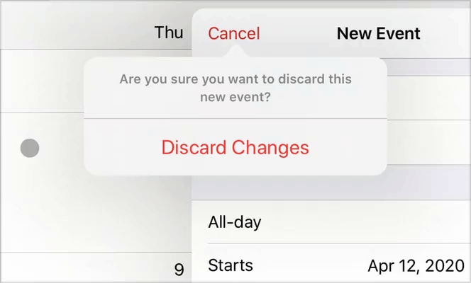
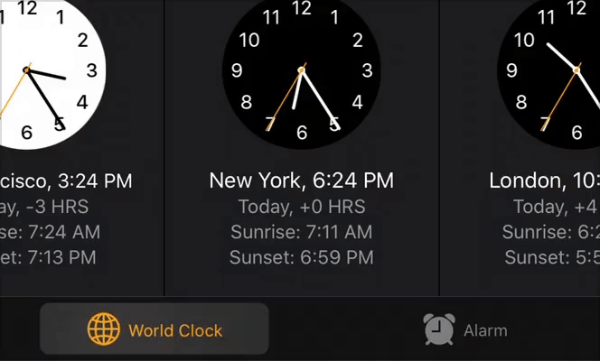
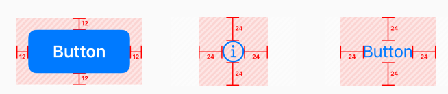
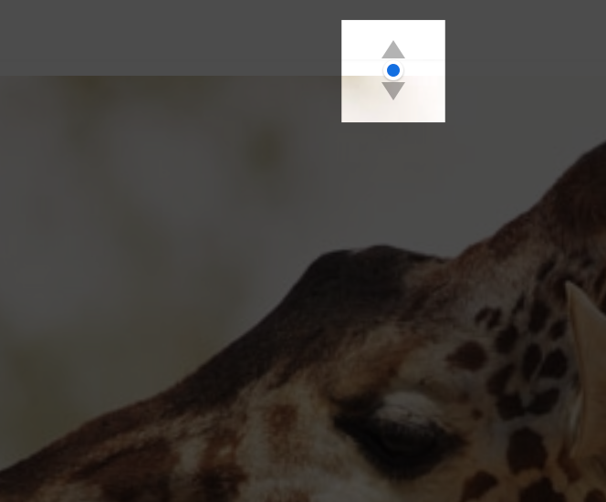
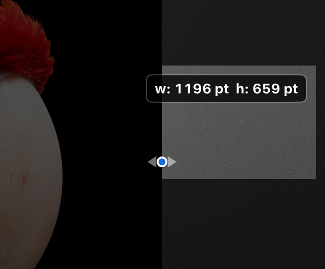

iPadOS 13.4 介绍了对于增强使用了指针设备（鼠标、触控板）的 iPad的使用体验的动态指针效果及其行为模式。当人们使用一个指针设备时，iPadOS 会自动适配指针到当前的操作场景中，并提供丰富的视觉反馈和恰到好处的精确度，用来提高效率、简化日常任务。
iPadOS 的指针系统给人们一种与 app 和内容进行交互的额外的方式，但它并没有代替触控。有些人可能会继续只使用触控操作，而其他人可能会更喜欢使用指针操作或者两者结合。让人们去选择如何与你的 app 进行交互，避免压缩你的 app 的界面或者作出一些要求他们必须使用指针的改变。

启用指针系统交互
- 无论人们使用的是触控操作、指针设备或者是键盘，都以提供一个一致的体验为目标：人们期望在使用触控操作和一个连接的输入设备之间能够顺畅移动，他们不想为每种模式或者每个他们使用的 app 学习不同的交互。
- 当人们通过连接的设备使用熟悉的手势时，确保你的 app 的所有区域正确无误：例如，如果人们可以在屏幕上通过滑动手指操作内容，那就考虑他们通过在触控板上使用两个手指、通过鼠标点击和拖拽或者滚动鼠标滚轮执行相同的动作是否说得通。
- 当人们长按一个修饰符按键，与你的 app 中的对象进行交互时，确保一个一致的体验。：例如，如果人们可以在拖拽时长按 Option 键复制一个对象，当人们使用触控操作或者鼠标拖拽时结果应该是一样的。
- 仅在有必要、有用的地方区分指针输入和手指输入：例如，当人们在使用指针输入设备时，视频进度条可以给人们一种额外的方式定位视频的某个位置。在这个情景中，人们可以使用指针设备或者通过触控操作拖动播放光标，但是在使用指针设备时，他们可以 悬浮/hover 并点击一个精确的目标位置。
- 让人们使用悬浮/hover 操作去显示和隐藏安歇可以自动最小化或淡出的控件：例如，人们可以通过在上面悬浮指针以使 Safari 最小化的工具栏显示出来（当指针移开时工具栏会再次最小化）。人们也可以在播放全屏视频时通过悬浮指针去显示或者隐藏播放控件。

指针形状和内容效果
iPadOS 将指针和指针悬浮在上面的元素的外观和行为结合在一起，让焦点集中在人们的目标对象上。你可以直接支持系统提供的指针效果或者修改这些效果以适合你的 app。
默认情况下，指针的形状是一个圆形，但是它可以在悬浮在特定元素或区域时展示一个系统定义的或者自定义的形状。例如，当指针悬浮在一个文本输入区域时，他会自动变成熟悉的 I 光柱形状的输入光标。

通过内容效果（content effect），当指针悬浮在上面时，UI 元素或者指针下面的区域也可以改变他的外形。取决于内容效果的类型，指针可以保持它现在的形状或者转变成一个与元素新外形相结合的一个形状。
iPadOS 定义了三种内容效果，让焦点集中在你 app 中不同的交互元素类型上：高亮/highlight、抬升/lift、悬浮/hover。
- 高亮效果会把指针转化成一个半透明的圆角矩形，这个矩形会作为控件的背景，并包括一个柔和的视差效果。微弱的突出和动感让焦点都集中在控件上，不会分散人们在他们的任务上的注意力。默认情况下，iPadOS 会把高亮效果应用到栏按钮（bar button）、标签栏（tab bar）、分段控件（segmented control）和编辑菜单（edit menu）上。

- 抬升效果将微弱的视差效果和提升的外形结合起来，让一个原色看起来浮在了屏幕上。当指针消失在元素下面时，iPadOS 通过将元素放大，在元素下方添加一个阴影，在元素上方添加一个柔和的镜面高光来创造一种抬升的错觉。默认情况下，iPadOS 会把抬升效果应用到 app 图标和控制中心的按钮上。

- 悬浮效果是当指针悬浮在元素上面时，一种让你把自定义的大小、描边或者阴影值应用到元素上的通用效果。悬浮效果将你的自定义的值结合起来，并把焦点聚焦在一个元素上，但是它不会转变默认的指针形状。

指针磁吸机制
除了通过指针的转变和内容效果让焦点聚焦在元素上，iPadOS 也可以通过让元素看起来在吸引指针来定位一个元素。当人们移动指针靠近一个元素或者他们将指针滑向一个元素时，他们就可以体验到这种磁吸效果。
当人们移动指针靠近一个元素时，当指针触及一个元素的热区（hit region）系统就会开始转换指针的形状。因为热区通常情况下会延伸到一个元素的可见边界之外，在指针看起来要接触到元素之前，指针就会开始转换，从而创造出一种元素正在把指针拉过去的错觉。

当人们将指针滑向一个元素时，iPadOS 会检查指针的轨迹以发现最有可能是目标的那个元素。当有一个元素在指针的路径中时，系统就会使用磁吸机制把指针拉向元素的中心。。
默认情况下，iPadOS 会把磁吸机制应用到使用抬升效果（如 app 图标）和高亮效果（如栏按钮）的元素上，不会应用到使用悬浮效果的元素上。因为一个悬浮效果的元素不会转换默认的指针形状，在上面添加磁吸机制会造成指针跳动的效果，可能会让人们感到失去了指针的控制。
系统也会把磁吸机制应用到文本输入区域，在那些地方当人们选择文本时，如果他们做出了无意的竖直移动，就可以帮助人们避免跳跃到另一行。
支持标准指针和效果
在可以的时候，启用系统提供的内容效果：人们会快速习惯于他们在整个系统中看到的内容效果，通常会期待这种体验也会应用到他们使用的 app 中。为了提供一个一致的用户体验，遵守每个效果的设计意图。特别的：
- 对于包含透明背景的一个小元素使用高亮效果；
- 对于包含不透明背景的一个小元素使用抬升效果；
- 对于大元素和根据需要自定义大小、描边、阴影属性的元素使用悬浮效果。
对于标准按钮和文本输入区域倾向于使用系统提供的指针外观：当指针行为以他们期待的方式呈现时，你可以在 app 中让人们感到更加舒服。
在可交互元素的周围添加边界间距以创造舒服的热区：你可能需要做测试以决定一个元素热区的合适尺寸。如果热区太小，它可以让人们在与元素进行交互时，感到必须十分精确。另一方面，当一个元素的热区太大，人们可能感到需要花费很大的力气把指针从一个元素上移开。通常情况下，在包含边框的元素周围添加大约 12pt 的边界间距的效果比较好，对于没有边框的元素，在元素的可见边界周围添加大约 24pt 的边界间距的效果最好。

- 对于自定义的栏按钮创建相邻的热区：如果栏上的相邻按钮的热区之间存在空隙，在指针在按钮之间移动时，指针会短暂地恢复成它的默认形状，这是一个会让人们感到注意力被分散的动画。
- 对于那些有抬升效果的非标准元素，指定它们的圆角半径。使用系统提供的提升效果，随着指针隐去，指针会转换成与元素形状相匹配的形状。默认情况下，指针使用系统定义的圆角半径去转换成一个圆角矩形。如果你的元素是一个不同的形状（例如它是圆形），你需要提供半径值，这样指针才能无缝地渐变成元素的形状。
自定义指针形状和效果
- 对于行为表现像系统标准元素的自定义元素倾向于使用系统提供的指针效果：当一个自定义元素的行为表现地像一个标准元素，人们通常会期望使用熟悉的指针交互与其互动。例如，如果在一个自定义导航栏的按钮没有使用标准的高亮效果，人们可能就会产生一种割裂感。
- 在你的整个 app 中用始终一致的方式使用指针效果：例如，如果你的 app 帮助人们绘画，在你的 app 中的每一个绘画区域都应该启用一个相似的指针体验，人们才可以把一个地方获取到的知识应用到另一个地方。
- 避免创造不必要的指针和内容效果：当指针的外观或者指针下面的 UI 元素发生变化时人们就会注意到，他们期望这些变化是有用的。创造一个仅仅是装饰性的指针效果会分散人们的注意力，甚至是因为没有提供任何的实际价值而惹火人们。
- 保持自定义的指针形状简洁：理性情况下，指针的形状传达了人们可以在当前情景下可以执行的操作，它不需要分散人们太多的注意力。例如，Keynote 在某些场景下会把指针转换成了一对箭头，表明了人们可以拖拽一个选择手柄的方向。如果人们没有马上理解你的自定义指针形状，他们可能就会在尝试搞清楚指针形状是什么意思上浪费时间。

- 考虑通过展示可以提供有用信息的自定义的注释增强指针体验：例如，在你的 app 中，你可以在指针悬浮在一个图形区域上面时展示 X 和 Y 值。例如下图中，Keynote 使用注释去展示一个可改变大小的图片的当前宽度和高度。

- 避免展示指针的指导使用文字：一个展示了指导使用文字的指针会让一个 app 变复杂、变得难于使用。在你的界面中优先考虑清晰和简洁，而不是提供指导说明，这样无论人们是通过指针还是触摸操控屏幕，他们都可以快速掌握如何使用你的 app。
- 在定义自定义悬浮效果时，考虑阴影、缩放和元素空间的相互作用：通常情况下，为可以增加尺寸而不会和周围元素显得拥挤的元素保留缩放比例。例如，缩放对于一个 table row 就不能运行良好，因为一个 row 不能在不覆盖相邻 row 的前提下扩展。对于一个周围只有很小空间的元素，考虑使用仅包括描边，但不包括缩放和阴影的悬浮效果。另外，如果不使用缩放只使用阴影的效果也不好，因为这种情况下，元素的阴影表明元素在屏幕上升起来了，但未缩放的元素却没有表明离用户更近了。
注：目前文章大部分文字来源于对 HIG 中指针系统的翻译，后续可能会补充一些实际应用案例以及开发实例。
参考链接
如果你觉得这篇文章对你有所帮助，欢迎请我喝杯咖啡，感谢你的支持😁